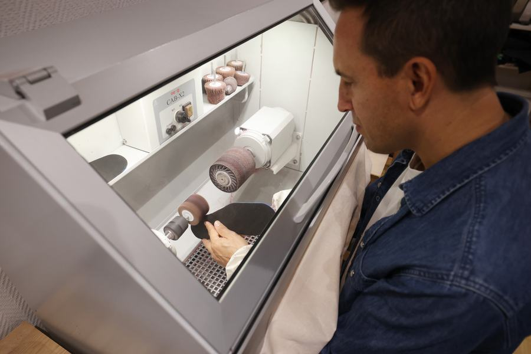
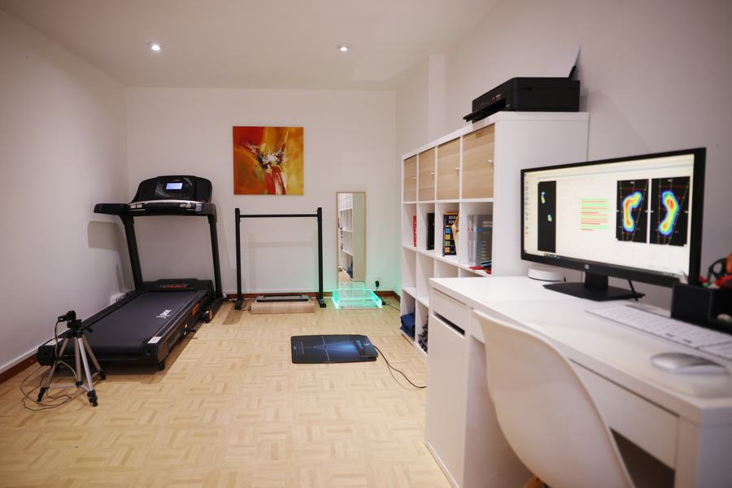

Adresser un patient au cabinet
Orthopédiste-orthésiste-podologiste à Paris 5ᵉ, Pierre-Emmanuel Giraud réalise le bilan et fabrique sur place, dans l’atelier du cabinet, les semelles orthopédiques et les orthèses que vous prescrivez ou recommandez à vos patients.

- Fabrication sur placeSemelles et orthèses façonnées dans l’atelier du cabinet.
- Délais courtsAdaptés quand la situation du patient le demande.
- Compte renduLe compte rendu d’examen est remis au patient.
- Semelles garanties 6 moisRetouchées ou refaites si besoin.
Bilan et appareillage sur mesure
Bilan podologique
Entretien, examen clinique, analyse statique sur plateforme de pression et analyse dynamique de la marche et de la course sur tapis. Examen du chaussage.
Pied
Orthèses plantaires (semelles orthopédiques) sur mesure, orthèses de nuit pour hallux valgus, orthoplasties en silicone.
Main, poignet & doigts
Orthèses thermoformées sur mesure, statiques ou dynamiques : pouce, poignet, poignet-pouce, doigts.
Pour quels patients ?
Le patient sportif : course, sports de raquette, sports collectifs, ski
Comment adresser un patient
La prescription
Pour une prise en charge par l’Assurance Maladie, le patient doit disposer d’une prescription médicale. Il est utile d’y préciser le dispositif (« orthèses plantaires sur mesure », « orthèse thermoformée sur mesure de poignet-pouce »…), le côté et l’indication. Kinésithérapeutes et autres professionnels peuvent orienter un patient directement : il consulte alors sans ordonnance, ou avec celle de son médecin.
Le rendez-vous
Le patient réserve sur Doctolib ou par téléphone, en indiquant qui l’adresse. Pour une situation qui ne peut pas attendre, appelez directement le cabinet.
Le bilan & la fabrication
Bilan, prise de mesures, puis fabrication à l’atelier et essayage sur place, avec retouches si nécessaire.
Le retour d’information
Le compte rendu d’examen est remis au patient, qui peut vous le transmettre. Pour échanger sur un patient, appelez le cabinet.

Pierre-Emmanuel Giraud
Orthopédiste-orthésiste-podologiste, formé à la prévention des blessures en course à pied (La Clinique du Coureur, 2020) et marathonien. Il travaille en lien avec les médecins, les kinésithérapeutes du sport et les chirurgiens qui suivent ses patients.
30-32 rue Broca, 75005 Paris — métro Censier-Daubenton (ligne 7), RER B Port-Royal.
N° RPPS : 10008953506 · ADELI : 758 300 933
Joindre le cabinet
Pour adresser un patient ou parler d’une situation, appelez directement. Vos patients réservent en ligne sur Doctolib.